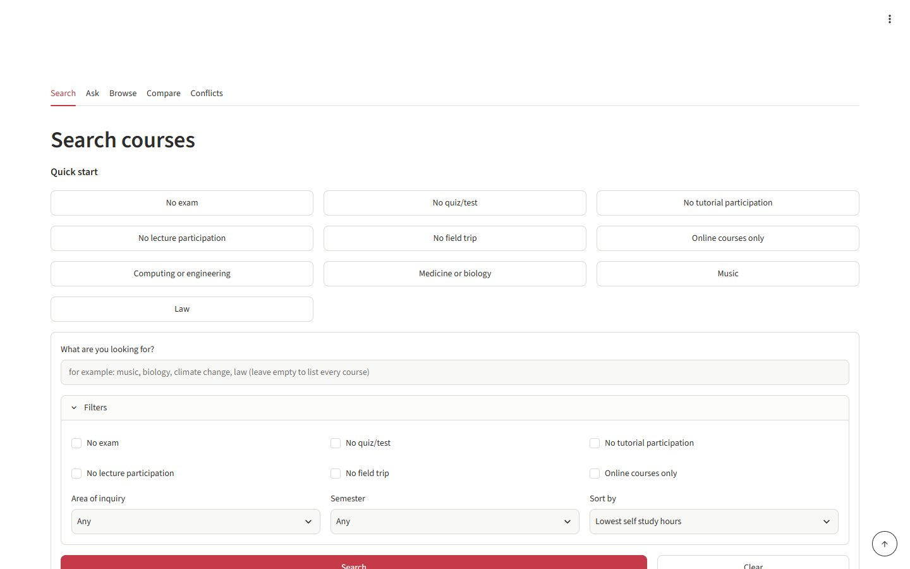
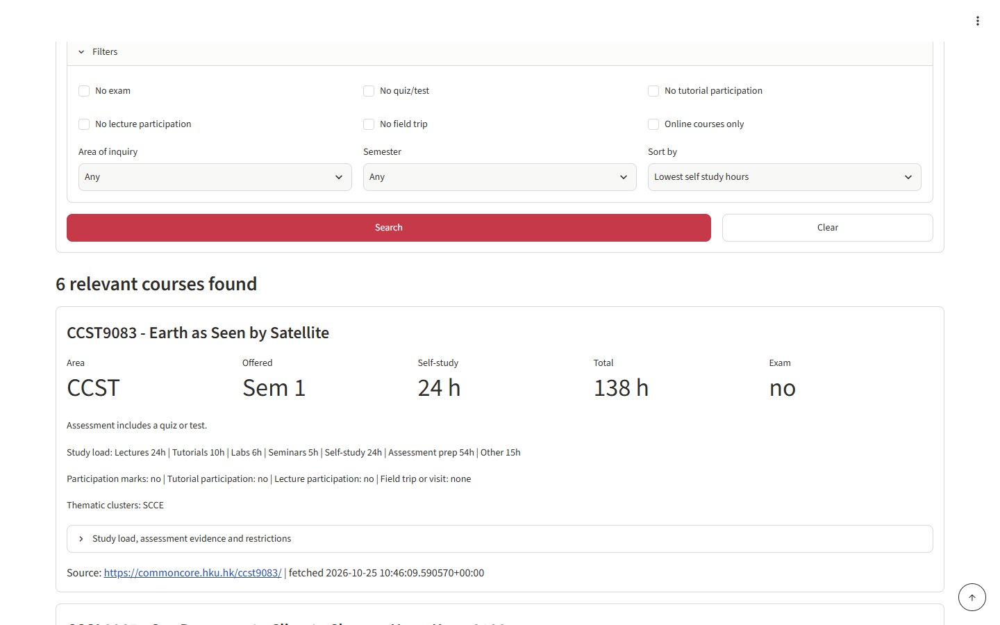
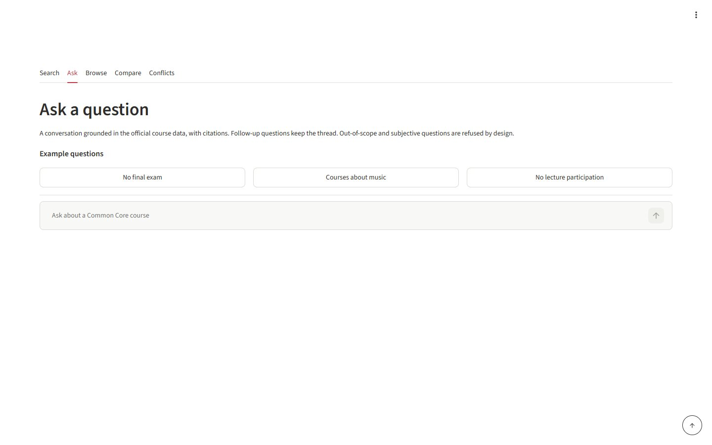
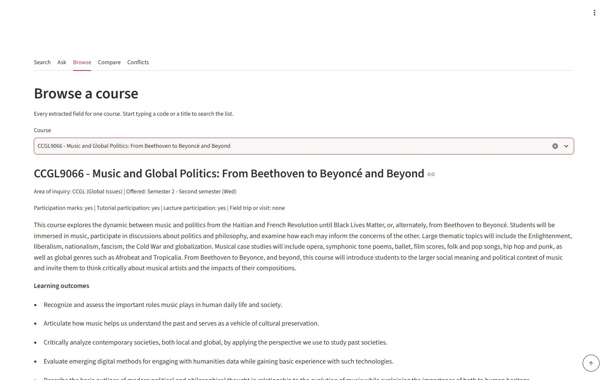
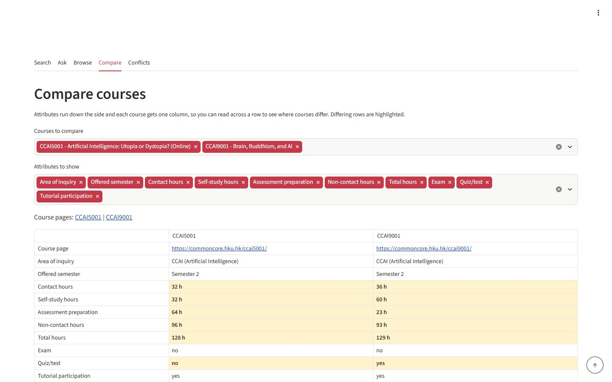
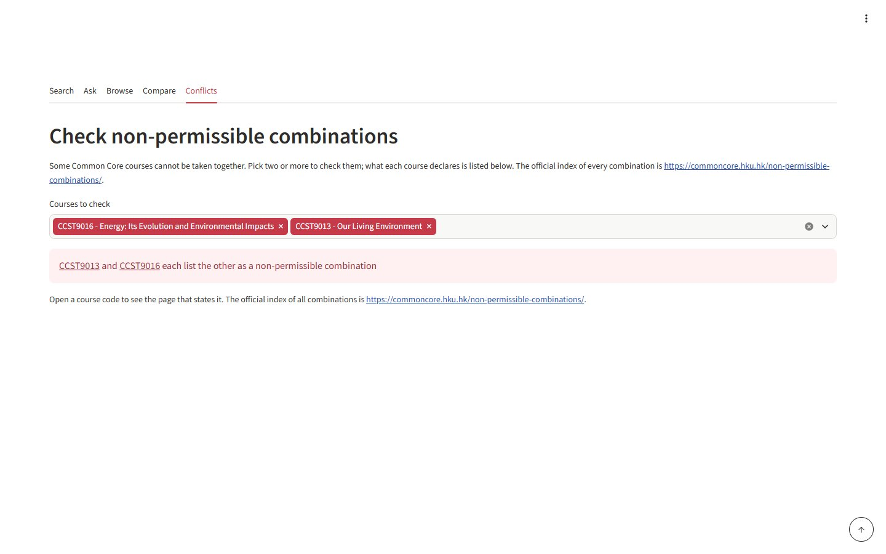

The official catalogue tells you 201 courses exist. It does not tell you which ones have no exam, how much independent work they really require, or which pairs you cannot take together. This app answers those questions from the published course pages — and shows the evidence for every answer.
Every HKU student picks Common Core courses, and the information needed to choose well is spread across 201 separate pages, each with its own tables. Comparing two courses means opening two tabs and reading two assessment breakdowns. The catalogue is honest and complete — it is just not comparable.
The app is informational only. It does not guarantee a seat, confirm eligibility, or rank courses by ease — and it says so on the page, next to every result.
Search, Ask, Browse, Compare and Conflicts — each screenshot below is the real app, running against the real 201-course dataset, nothing mocked up. Click any screenshot to enlarge it.
Type a subject, or leave the box empty and use only filters. A course is listed only when your words actually appear on its own page — a match on its area of inquiry or a look-alike neighbour is never dressed up as a keyword match, and if nothing matches, the app says so.
CCGL9066 jumps straight to that course
Every hit is admitted on wording a reader can check, so the ranked list can be taken at face value. Each card then gives the figures that matter: self-study hours, total hours, exam status and the full study-load breakdown.

A chat grounded in the course pages: answers stream in, cite a course code and a URL, and keep the thread across follow-ups. When the catalogue holds nothing, it says so instead of inventing an answer.

Pick a course and read the full record: description, learning outcomes, participation details, the study-load and assessment tables, thematic clusters and the non-permissible combinations — all from one page, with the source link.

Attributes run down the side and one column per course, so a row shows the difference at a glance. Rows where the courses differ are highlighted and listed underneath.

Select any set of courses and the app checks every pair for a non-permissible combination. A red warning appears only when the clash is inside your selection.

A one-off pipeline turns 201 published pages into a structured, embedded catalogue. The app only ever reads that catalogue — so a search costs milliseconds and needs no network.
# one command, no scraping, no network, no API key docker compose up -d # then open http://localhost:8501 — the catalogue is already inside # rebuild the catalogue from the live pages (needs network, ~20 min on CPU) docker compose --profile pipeline run --rm pipeline \ python scripts/run_pipeline.py
Reproducibility was a design goal: the committed seed holds 201 courses, 1,385 passages and every embedding vector, so a fresh clone is a working app in one command.
The demo video will be added after upload. The project repository is available to authorized viewers.
AILT9019 · The University of Hong Kong.